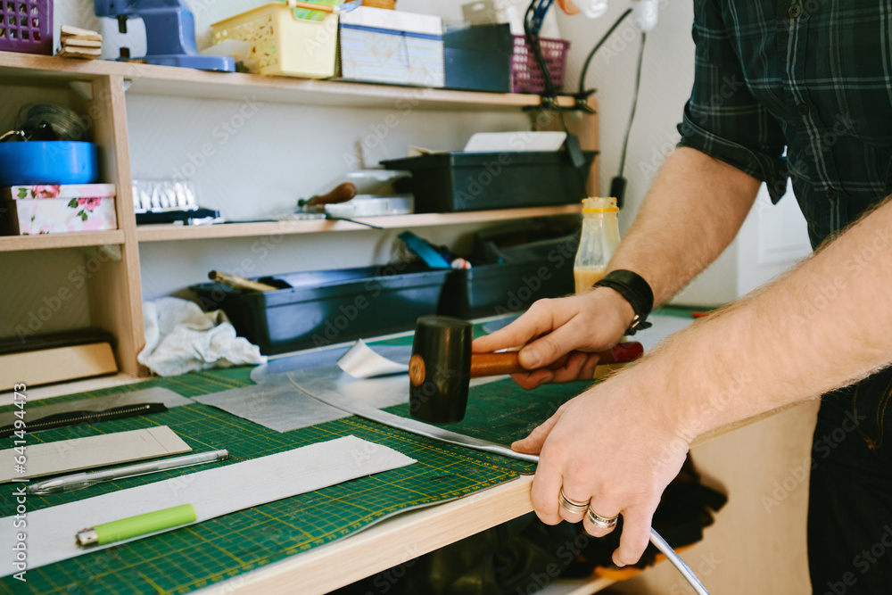

3) Screwdriver (**Note:** Not a striking tool)
A tool with a metal shaft and a specialized tip that fits the head of a screw for turning it.

Striking tools are essential for various construction and woodworking tasks. Here are some common examples:
1) Mallet
A heavy-headed tool used for striking chisels or driving nails, often made of rubber or wood for softer materials.
2) Claw Hammer
A versatile hammer with a forked claw on the back for pulling nails.
3) Screwdriver (**Note:** Not a striking tool)
A tool with a metal shaft and a specialized tip that fits the head of a screw for turning it.
4) Wood Rasp File
A coarse file with a rough surface used for shaping and smoothing wood.